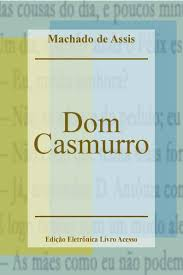
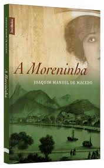

Entendendo mais
A história da literatura brasileira tem início em 1500 com a chegada dos portugueses no Brasil. Isso porque as sociedades que aqui estavam eram ágrafas, ou seja, não possuíam uma representação escrita. Assim, a produção literária começa quando os portugueses escrevem sobre suas impressões da terra encontrada e dos povos que aqui viviam. Ainda que sejam diários e documentos históricos, esses representam, as primeiras manifestações escritas em território brasileiro. A literatura brasileira é subdividida em duas grandes eras que acompanham a evolução política e econômica do País. A Era Colonial e a Era Nacional são separadas por um período de transição que corresponde à emancipação política do Brasil.
Livros
 
Teste seus conhecimentos